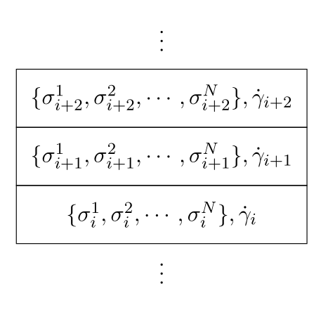

Work and Power in Active and Sheared Systems, respectively
Timothy Ekeh
In collaboration with E. Fodor and M. Cates
Active Work Cycles
Active Systems

Energy injection at the particle/constituent scale
Leads to a whole host of non-equilibrium phenomena: MIPS, crowding at boundaries, generic loss of equation of state
Loss of Equation of State
For ABPs it was shown that generally $P = P(\vec{\alpha}) $ i.e no Equation of State

AP Solon et al Phys. Rev. Lett., vol. 114, p. 198301, 2015
Work Extraction With Active Engines
Can create "boundary dependent cycles" - ones that vary only the confining potential parameters
Thermodynamics on Trajectories
Equilibrium Engines with Classical Thermodynamics
|
Thermodynamic description very succesful in predicting engine behaviour $ dU = \underbrace{TdS}_{\text{Heat}} - \underbrace{PdV}_{\text{Work}}$ Work done by system: $ \mathcal{W} = \oint P dV $ Bound on efficiency of engine working between two temperatures $ \eta \leq \eta_C = 1 - \frac{T_C}{T_H}$ |
Stochastic Thermodynamics (1)
Applying thermodynamic principles on the level of trajectories
Langevin
\begin{equation} \begin{aligned} \dot{x} &= \mu F(x, \vec{\alpha}) + \sqrt{2 D_t} \eta \\ &= \mu( -\partial_x V(x, \vec{\alpha}) + f) + \sqrt{2 D_t} \eta \end{aligned} \end{equation}
\begin{equation} dE = \underbrace{ \bar{d} w}_{\text{Work done on the system}} - \underbrace{ \bar{d}q}_{\text{ Heat delivered to bath}} \\ \end{equation}
\begin{equation} \bar{d}w = \partial_{\alpha_j}V d\alpha_j + f dx \\ \bar{d}q = (\dot x - \sqrt{2 D_t} \eta) dx = F dx \end{equation}
Udo Seifert Rep. Prog. Phys. 75 (2012) 12600
Stochastic Thermodynamics (2)
|
With no external driving we have $ \langle\bar{d} w \rangle = \langle \partial_{\alpha_i} V \rangle d\alpha_i $ $ \rightarrow \langle \mathcal{W} \rangle_{t} = \int^t_0 \langle \partial_{\alpha_i} V \rangle \dot\alpha_i dt $ $ \rightarrow \langle \mathcal{W} \rangle_{qs} = \oint \langle \partial_{\alpha_i} V \rangle d\alpha_i $ $0$ at equilibrium with fixed thermostat. Integrand is an exact differential in equilibrium - not true generally |
Engine Analysis
Harmonic Wall Model
|
Anisotropy $\kappa \propto a^2 - b^2$ $ u_r = \lambda \kappa \sin(2\theta)$ |
$ \dot{{\bf x}} = v {\bf u}(\theta) - \mu_t \nabla_x u_t + \sqrt{2D_t} \eta_1 $ $\dot{\theta} = -\mu_r \partial_{\theta} u_r+ \sqrt{2 D_r} \eta_2$ |
$ \langle \mathcal{W} \rangle = \oint \Big( \langle \partial_{\ell} u_{tot} \rangle \ell + \langle \partial_{\lambda} u_{tot} \rangle d\lambda \Big) \implies \iint \underbrace{\Big( \partial_{\lambda} \langle \partial_{\ell} u_{tot} \rangle - \partial_{\ell} \langle \partial_{\lambda} u_{tot} \rangle \Big)}_{w(\lambda, \ell)} d\ell d\lambda $
Calculation Route
$ \partial_t \mathcal{P} = - \partial_x \Big( (v cos\theta - \mu_t \partial_x u_t) \mathcal{P} - D_t \partial_x \mathcal{P} \Big) + \partial_{\theta} \Big( \mu_r \partial_{\theta}u_r + D_r\partial_\theta \mathcal{P} \Big) $
Green's function methods can be used to calculate averages
Optimizing Quasistatic Cycles
Pe=$v^2/2D_t D_r$
Finite Time Cycles
Finite Time Cycles
$ \langle \mathcal{W} \rangle = \int^{\tau_c}_0 \Big( \langle \partial_{x_w} V \rangle \dot{\ell}+ \langle \partial_{\lambda} V \rangle \dot{\lambda} \Big) dt $
$\begin{equation} \begin{aligned} \langle \mathcal{Q} \rangle &= \sum_{i=1}^N \int^{\tau_c}_0 \Big[ \mu_t^{-1} \langle \dot{\bf r}_i \cdot ( \dot {\bf r}_i - \sqrt{2D_t} {\bf \xi}_i) \rangle + \mu_r^{-1} \langle \dot \theta_i \cdot ( \dot \theta_i - \sqrt{2D_r} {\bf \eta}_i) \rangle \Big] dt \\ &= \langle \mathcal{W}\rangle + v \mu_t^{-1} \sum_{i=1}^N \int_0^{\tau_c} \langle \dot {\bf r}_i \cdot {\bf e}_i \rangle dt \end{aligned} \end{equation}$
Define the output power as
$ \mathcal{P} = -\frac{\langle\mathcal{W}\rangle_{\tau_c}}{\tau_c} $
...and efficiency as
$ \mathcal{E} = \frac{\langle\mathcal{W}\rangle_{\tau_c}}{\langle\mathcal{W}\rangle - \langle\mathcal{Q}\rangle} $
Power Peaks at Finite Time
Rare Events and Injected Power
Jamming
The jamming transition is separates flowing materials from ones with a yield stress
A. J. Liu and S. R. Nagel, Nature 396, N6706, 21 (1998)
Sheared Soft Spheres
Volmer model shears soft spheres with Lees-Edwards boundary conditions
Global power injection into the system, through the boundaries
Local power is a fluctuating quantity
$p^{(loc)} \propto \sigma_{xy}^{(loc)} \cdot \dot{\gamma}^{(loc)}$
$p^{(loc)} < 0$ are rare fluctuations
Distribution of Injected Power
S. H. E. Rahbari, A. A. Saberi, H. Park, and J. Vollmer,“Characterizing rare fluctuations in soft particulate flows,” Nat. Commun.8, 11 (2017)
Distribution of Injected Power
S. H. E. Rahbari, A. A. Saberi, H. Park, and J. Vollmer,“Characterizing rare fluctuations in soft particulate flows,” Nat. Commun.8, 11 (2017)
Elastoplastic models
Mesoscopic Modelling
Coarse-grained models with phenomenological rules for evolution, to describe elastoplastc materials
|
Made of 4 basic components
|
Examples: Soft Glassy Rheology (SGR), Hebraud Lequex (HL),,...
Hebraud Lequex Model
"zero dimensional"
$ \partial_t P(\sigma, t) = \underbrace{-\dot{\gamma} \partial_{\sigma} P(\sigma, t)}_{\rm advection} + \underbrace{D(t) \partial_{\sigma}^2 P(\sigma,t)}_{\rm mechanical\ noise} - \underbrace{\overbrace{\frac{1}{\tau} \Theta( \vert\sigma\vert - \sigma_c)}^{\equiv r(\sigma)} P(\sigma, t) + \Gamma(t) \delta(\sigma)}_{\rm resetting\ behaviour}$
with the feedback mechanism:
$D(t) = \alpha \Gamma(t) \equiv \frac{\alpha}{\tau} \int \Theta( \vert\sigma'\vert - \sigma_c) P(\sigma', t) {\rm d}\sigma' $
Yielding Transition in HL
Yield stress material: $\lim\limits_{\dot{\gamma} \to 0} \langle \sigma\rangle \sim \sigma_{Y} + A \dot{\gamma}$
Yielding transition for $\alpha < \sigma_c^2/2 $
HL with force balance
Standard HL sets the shear rate as a parameter
Force balance condition along streamlines
$\Sigma = N^{-1}\sum_{j=1}^N \sigma_i^j + \eta \dot{\gamma}_i$ on top of HL stress dynamics
Shear Rate dynamics under force balance
Able to justify an equation for the evolution of $\sigma$ and $\dot{\gamma}$
$ \begin{equation} \begin{aligned} \partial_t P(\vec{\sigma}, \dot{\gamma}, t) &= \sum_i \Bigg[ -\dot{\gamma} \partial_{\sigma_i} P + D(t) \partial^2_{\sigma_i}P \Bigg] \\ &+\frac{1}{\eta} \partial_{\dot{\gamma}} ( \dot{\gamma} P) + \frac{D(t)}{\eta^2 N} \partial_{\dot{\gamma}^2} P + \int d\vec{\sigma}' d\dot{\gamma}' \big[ W(\vec{\sigma}, \dot{\gamma} \vert \vec{\sigma'}, \dot{\gamma}' ) P(\vec{\sigma'}, \dot{\gamma}') - W( \vec{\sigma'}, \dot{\gamma}' \vert \vec{\sigma}, \dot{\gamma} ) P(\vec{\sigma}, \dot{\gamma}) \big] \end{aligned} \end{equation}$
with
$ \begin{equation} \label{eq:kep-jump-rates} W(\vec{\sigma}, \dot{\gamma} \vert \vec{\sigma'}, \dot{\gamma}' ) = \sum_i r(\sigma'_i)\delta(\sigma_i) \delta\big(\dot{\gamma} - (\dot{\gamma}' + (N\eta)^{-1} \sigma'_i)\big) \Bigg[ \prod_{j\neq i} \delta(\sigma_j - \sigma'_j)\Bigg] \end{equation} $
Shear Rate distribution
Numerical Results
Rare Power Fluctuations
Crossover in Fluctuation Behaviour
Thank You
Extra details
Stochastic Thermodynamics (2)
Consider: Half space potential $V = V(x-x_w)$ with adjustable position $( \vec{\alpha} = (x_w) ) $ with no driving $(f = 0)$
\begin{equation} \begin{aligned} \langle\bar{d} w \rangle & = \langle \partial_{x_w} V \rangle dx_w \\ & = -\langle \partial_{x} V \rangle dx_w \\ & = \underbrace{\Big( -\int \rho \partial_xV dx \Big)}_{\text{Pressure}} dx_w \end{aligned} \end{equation}
We recover the thermodynamic definition of work output
Cyclic Uncertainty Relation (?)
$\frac{1}{\langle (\mathcal{P} - \langle \mathcal{P}\rangle)^2} \Bigg[ \langle \mathcal{P} \rangle + \tau_c \frac{d\langle \mathcal{P} \rangle}{d\tau_c} \Bigg]^2 \leq \frac{\langle \mathcal{Q}\rangle}{2 T}$
T. Koyuk and U. Seifert, Operationally Accessible Bounds on Fluctuations and Entropy Production in Periodically Driven Systems, Phys. Rev. Lett. 122, 230601 (2019).
Cyclic Uncertainty Relation (?)
Using $\sum_i \langle \dot {\bf r}_i \cdot {\bf e}_i \rangle \approx Nv $, at maximum power we have
$\frac{1}{\langle (\mathcal{P} - \langle \mathcal{P}\rangle)^2} \Bigg[ \langle \mathcal{P} \rangle + \tau_c \frac{d\langle \mathcal{P} \rangle}{d\tau_c} \Bigg]^2 \leq \frac{N v^2/\mu_t - \langle \mathcal{P}\rangle}{2 T}$
Which bounds the fluctuaions away from the mean